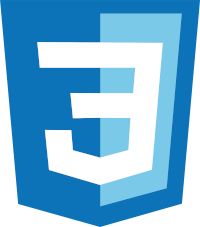

Olá! Sou o Nulgort Cesar, Desenvolvedor Front-end apaixonado por transformar ideias em códigos e criar experiências interativas para a web. Atualmente, estou focado em aprimorar minhas habilidades com HTML, CSS e JavaScript, desenvolvendo projetos práticos — desde aplicações web criativas até jogos interativos. Gosto de unir lógica e design para construir interfaces limpas, funcionais e agradáveis de usar.

Um jogo web interativo desenvolvido do zero com foco em lógica de programação e manipulação do DOM. O objetivo é acumular pontos clicando no barco de pesca, desbloquear melhorias de clique e gerenciar ganhos automáticos por segundo. Projeto criado para praticar HTML, CSS e JavaScript.
Projeto educacional e tecnológico desenvolvido para a edição de 2025 do Programa Agrinho. O site aborda a conscientização sobre a importância do campo, sustentabilidade e inovação agrícola, combinando responsabilidade social com o desenvolvimento web (HTML e CSS)
Landing page e site desenvolvido para uma marca fictícia de confeitaria artesanal. O projeto foca em um design acolhedor e visualmente atraente para destacar os produtos, facilitar a visualização de sabores e aproximar o cliente da marca.